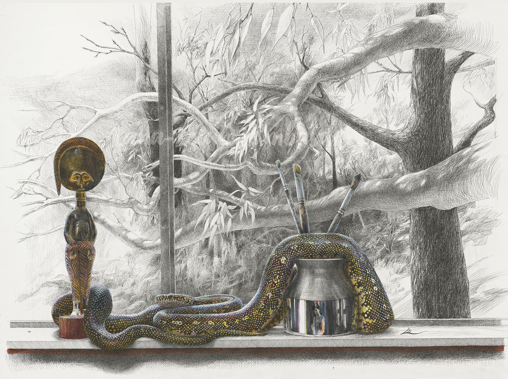

Snake in Studio
{kind=link}

Second Place in CLASS 9 - Drawing at the 2025 Sydney Royal Arts & Crafts competition
Snake in the Studio
Ink and Acrylic Pens on 300gsm paper.
This is a pen drawing of an Australian Diamond Python that regularly sneaks into my studio and suns herself on my window sill, knocking almost everything off in the process. Only the vase - because it is super heavy and the African statue, which is attached with a big dollop of blue tack, were safe from her.
She’s called Domino because of the striking dotty patterns on a glossy dark background that mark her very beautiful skin. In places the markings join to look a little like a variation on the infinity symbol or strange writing, which appealed to me and made me think of the European and Nordic mythologies of Ouroboros.
Snake scales are insane, not only did I have to contend with the complexity of the patterns of her skin but the shape of the scales and the way they change with the angles of her cylindrical shape as her curves change direction and the different sources of light on top of that. Amazing fun and such a challenge that I just didn’t feel I captured as well as I’d like. I definitely would like to do another drawing of her when I have time for another personal project.
Another reason I worked on this drawing this year was because it’s the Year of the Snake so I figured it would be a nice connection to Asia as I seemed to be including something from many of the continents that I feel an affinity to for different reasons and it just felt right.
There is a connection to South America in the Jacaranda tree, which I also had in my backyard in Zimbabwe growing up. Although I omitted the leaves to accentuate the rough branches and trunk which contrast with the lovely smooth eucalyptus tree branches. The Eucalypt leaves I did keep as they tend to be sparse anyway. I wanted the entwined branches to reflect the sinuous flow of Dominos body. I did take some liberty with the view outside the window which includes the trees in my backyard and the Lane-Cove National park bushland that we live on the edge of.
The wooden statue came with the house when we moved in and is one of my favourite items in my studio as it is obviously from Africa. It was such a wonderful thing to find as it is from the continent I was born and grew up on. It does have the look of more West African relics than the statues I am familiar with, from Zimbabwe. From the little research I was able to do on it - it is likely to be a little fertility relic.
The vase is North American (I think but I'm not sure), as is one of the paint brushes. The representation was a bit sparse on that side of things but I didn’t want to add anything unnecessary. I was very amused to discover in drawing the shiny part of the vase that the shapes I could see actually included my reflection taking a photo of the snake so I accentuated that a little and then I discovered another reflection of myself when I drew Domino’s eye, although it is extremely hard to see unless you get up very close to the image.
Initially I found this such a hard drawing to work on. I find the beauty of Domino both mesmerising and disturbing in equal measure. I can’t paint in the studio when she is in there despite knowing she is very unlikely to bite me, She represents to me the true unpredictable and inscrutable nature of the Universe, that we humans are so often sheltered from in our little pockets of urban civility. As I started the drawing the meditative nature of working with pen slowly changed that feeling. I started to see connections I hadn’t noticed and by the end was actually sad that it was complete. It was a very enjoyable drawing to work on.
The original painting has been sold but limited edition giclee prints will be available soon.